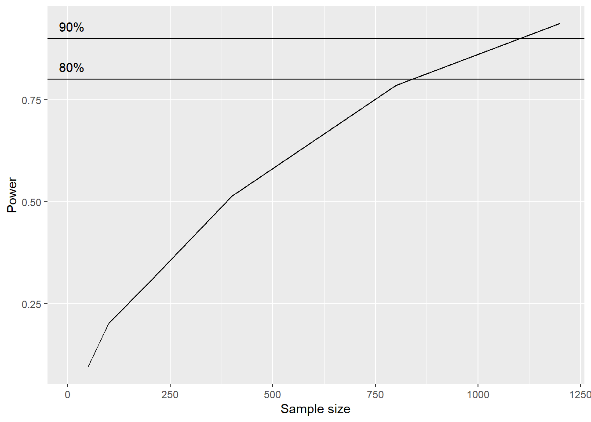

d <- data.frame(y = rnorm(10, 0, 1))15 Simulations
What is a simulation study? We can think of a simulation study as an experiment using synthetic data, generated from a know (reproducible) data generating mechanism. The experiment is designed to answer a specific questions, for example:
- How many participants do we need to recruit to our experiment? A simulation-based Power analysis would answer this question.
- Which method is most efficient in answering our question? We can use simulations to make an informed decision about the the best method for a given problem.
- Understanding a model. If we know the parameters used to generate data, can we recover them as part of a specific model?
- Understanding causal models. What are our possibilities for detecting causal effects in the data.
A simulation study can become very complex. As with other areas, it is a good idea to start with a minimum setup and build from that. Below, we introduce the basics!
15.1 How to do simulations studies?
R has a set of functions used to generate (pseudo) random numbers, such as rnorm(). The rnorm() function samples data from a normal distribution. Similarly, functions listed in the table (Table 15.1) uses other distributions as a source for simulating data.
| Function | Distribution | Data type | Example use |
|---|---|---|---|
rnorm(n, mean, sd) |
Normal | Continuous, unbounded | Body mass, strength, change scores |
rlnorm(n, meanlog, sdlog) |
Log-normal | Continuous, positive, right-skewed | Reaction times, biomarker concentrations |
rt(n, df) |
Student’s t | Continuous, unbounded, heavy tails | Data with outliers |
runif(n, min, max) |
Uniform | Continuous, bounded | Random allocation, bounded measurements |
rgamma(n, shape, rate) |
Gamma | Continuous, positive, skewed | Waiting times, costs |
rexp(n, rate) |
Exponential | Continuous, positive | Time to event |
rweibull(n, shape, scale) |
Weibull | Continuous, positive | Survival / time to failure |
rbeta(n, shape1, shape2) |
Beta | Continuous, proportion (0–1) | Percentages, fractions |
rbinom(n, size, prob) |
Binomial | Count out of fixed total (binary if size = 1) |
Successes/failures, yes/no outcomes |
rpois(n, lambda) |
Poisson | Count, unbounded | Number of events, repetitions |
rnbinom(n, size, mu) |
Negative binomial | Count, overdispersed | Counts with variance > mean |
rgeom(n, prob) |
Geometric | Count (trials before first success) | Attempts until success |
rmultinom(n, size, prob) |
Multinomial | Categorical counts | Counts across several categories |
sample(x, size, replace, prob) |
Discrete (user-defined) | Categorical / ordinal | Group allocation, Likert-type responses |
MASS::mvrnorm(n, mu, Sigma) |
Multivariate normal | Continuous, correlated variables | Repeated measures, correlated outcomes |
15.1.1 A simple example
We want to simulate data from a normal distribution, consider the model \(y \sim \operatorname{Normal}(\mu, \sigma)\). We read this as, y is distributed as Normal, with mean μ and standard deviation, σ. We can add some numbers, let’s say that \(\mu = 0\) and \(\sigma=1\). Using these parameter values we can use rnorm to simulate a data set.
The data frame saved in d contains (pseudo-) random numbers from a normal distribution, according to our specification.
d y
1 -0.8492836
2 0.8521449
3 0.4854341
4 0.1280756
5 0.2604764
6 1.1291843
7 -0.9970583
8 0.4227155
9 0.8027113
10 -0.2690905We can expand the model to include a linear predictor (Equation 15.1).
\[ \begin{align} y_i &\sim \operatorname{Normal}(\mu_i, \sigma) \\ \mu_i &= \alpha + \beta x_i \\ x_i &\sim \operatorname{Uniform}(-1,1) \\ \alpha &= 0,\quad \beta = 0.2,\quad \sigma = 1 \end{align} \tag{15.1}\] for \(i = 1,\dots, n\)
The model can translated to code by first setting the size of the sample (n), sampling a predictor variable and setting the parameter values.
# The number of observations
n <- 5000
# Sampling the predictor variable
x <- runif(n, -1, 1)
# Parameters
alpha <- 0
beta <- 0.2
sigma <- 1
# Generate data
y <- rnorm(n, alpha + beta * x, sigma)
# Save the data
d <- data.frame(x, y)The
head(d) x y
1 -0.8612270 -1.5739348
2 0.1857432 -0.1673838
3 -0.5649543 -0.8876441
4 -0.8354950 0.5089536
5 -0.8582871 -0.1210711
6 0.4973516 0.2366930The generated data can be used to see if we can retrieve the simulated effect:
# The model
m <- lm(y ~ x, data = d)
# Estimated parameters
ahat <- coef(m)[1]
bhat <- coef(m)[2]
shat <- sigma(m)
paste("Intercept: ", round(ahat,3))[1] "Intercept: 0"paste("Slope (x): ", round(bhat,3))[1] "Slope (x): 0.2"paste("Residual variation: ", round(shat,3)) [1] "Residual variation: 0.99"15.1.1.1 Power analysis through simulations
Let’s say we want to determine the sample size for a observational study. Participants are either in group A or group B, we want to determine if strength is associated with group. We want a study design (number of participants recruited) that will find a small effect (\(\beta = 0.2\sigma\), where \(\sigma\) is the within group standard deviation).
# Set a seed for reproducibility
set.seed(1)
# Total sample sizes (split equally between groups)
n <- c(50, 100, 200, 400, 800, 1200)
sim_fun <- function(n, alpha, beta, sigma) {
# Balanced groups, coded 0 (A) and 1 (B)
x <- rep(0:1, length.out = n)
y <- rnorm(n, alpha + beta * x, sigma)
data.frame(x, y)
}
sim_analyse <- function(d) {
# Fit the model
m <- lm(y ~ x, data = d)
# get the p-value
pval <- coef(summary(m))[2,4]
# return the p-val
return(pval)
}
iter <- 1000
results <- data.frame(sample_size = rep(NA, iter * length(n)),
pval = rep(NA, iter * length(n)))
for(k in seq_along(n)) {
for(i in 1:iter) {
# Add a row counter
row <- (k - 1) * iter + i
d <- sim_fun(n[k], alpha = 0, beta = 0.2, sigma = 1)
results$sample_size[row] <- n[k]
results$pval[row] <- sim_analyse(d)
}
}
library(tidyverse)
# Power: proportion of p-values below 0.05 per sample size
results |>
mutate(sig = if_else(pval < 0.05, 1, 0)) |>
summarise(.by = sample_size,
power = sum(sig) / n()) |>
ggplot(aes(sample_size, power)) + geom_line() +
geom_hline(yintercept = c(0.8, 0.9)) +
annotate("text",
y = c(0.83, 0.93),
x = 10,
label = c("80%", "90%")) +
labs(x = "Sample size",
y = "Power")
The above serves an illustration of simple example.